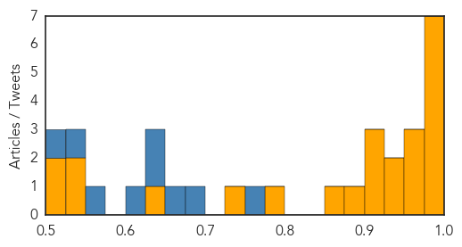
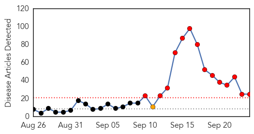
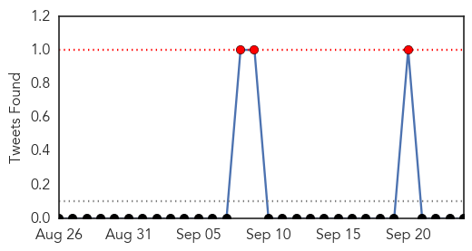
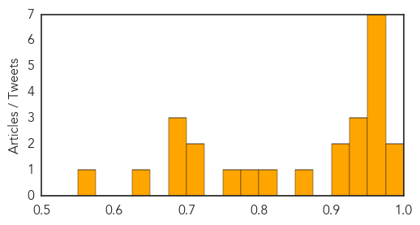

Ebola
30-Day Web Trend
0 alerts, 0 warnings

30-Day Twitter Trend
0 alerts, 0 warnings

Article Locations

Article Confidences
Top Articles:
- 0.999
- Dr. Umar Khan Contracts the Ebola Virus
- 0.998
- Here's What U.S. Leaders Learned from Ebola One Year Later
- 0.998
- No Ebola in Hoima, Says Health Ministry
- 0.994
- UNFPA trains youth on Ebola disease
- 0.990
- WHO Ebola effort faltered in African city
- 0.985
- LIBERIA: Another American Tests Ebola Positive – Says Samaritan’s Purse Official
- 0.982
- Hospital Infection Control: Beyond Hand Washing and Flu Shots
- 0.972
- Africa: Ebola-Hit Countries Get Public Health Emergency Coordination Centers
- 0.958
- Bungling by U.N. agency hurt Ebola response
- 0.954
- Every Patient Will be Misdiagnosed Once, Study Warns
- 0.937
- Kenya: Ebola Causes Impotency and Blurry Vision
- 0.931
- Ghana Health Service, NGO train nurses on ebola
- 0.909
- Kenya Airways cleared for direct Sierra Leone flights to its network
- 0.906
- Rashon Lane: Understanding 'Why' in the Ebola Outbreak
- 0.901
- Ebola survivors suffer complications
- 0.896
- Only one health goal on the SDG agenda
- 0.861
- As Haj begins, Saudi officials focus on protecting pilgrims
- 0.796
- Liberia: VP Boakai On Liberia's Health Sector
- 0.745
- Millennium Challenge Corporation approves $300 million for Liberia and Sierra Leone
- 0.649
- Saudi Arabia: 2 million in Mecca for start of hajj
- 0.549
- Reducing Child Mortality in Sub-Saharan Africa
- 0.532
- LIBERIA: MTM’ Makes More Donations Including An Ambulance To Several Communities
- 0.514
- S/Leone VP on Progress in Ebola Fight
- 0.510
- Syria, Ebola failures highlight UN shortcomings
Top Tweets:
- 0.768
- Rashon Lane: Understanding 'Why' in the Ebola Outbreak - UCSF News Services http://t.co/cIb1IWM3IL ebola EVD
- 0.696
- Prognostic Analysis of Patients with Ebola Virus Disease http://t.co/SvLV0nHfwP
- 0.666
- Three key lessons we learned from the Ebola epidemic. Read more via http://t.co/0byEYGHqGA
- 0.649
- Syria Ebola Failures Highlight UN shortcomings - Washington Times http://t.co/UppZodav3W ebola EVD
- 0.633
- RT: Three key lessons we learned from the Ebola epidemic. Read more via http://t.co/0byEYGHqGA
- 0.605
- S/Leone VP on Progress in Ebola Fight - Liberian Daily Observer http://t.co/6WlRixZPTZ ebola EVD
- 0.571
- Here's What US Health Experts Learned from Ebola One Year Later - TIME http://t.co/mM0TsOuWEw ebola EVD
- 0.528
- Syria Ebola Failures Highlight UN Shortcomings - ABC News http://t.co/2Fr1hrjKEZ ebola EVD
- 0.519
- RT: No new confirmed Ebola cases were reported in SierraLeone in the week to 20 September. EbolaResponse https://t.co/q9…
Dengue Fever
30-Day Web Trend
14 alerts, 1 warnings

30-Day Twitter Trend
3 alerts, 0 warnings

Article Locations

Article Confidences
Top Articles:
- 0.988
- Hospitals defer surgeries, divert staff to fever wards
- 0.982
- One more succumbs to swine flu, toll 6
- 0.974
- Taiwan suffers deadliest ever dengue outbreak
- 0.973
- Taiwan suffers deadliest ever dengue outbreak
- 0.971
- Taiwan suffers deadliest-ever dengue outbreak, with record high of 42 people dead, East Asia News & Top Stories
- 0.968
- Nadda claims adequate arrangements in place to tackle dengue cases
- 0.968
- Kamrup(M) records over 100 dengue cases
- 0.968
- Taiwan suffers deadliest ever dengue outbreak
- 0.952
- Dengue sting gets deadlier, 11 more ill
- 0.949
- Nadda claims adequate arrangements in place to tackle dengue cases , AniNews.in
- 0.947
- Two more tested dengue positive, toll 27
- 0.934
- 2 more deaths take dengue toll to 28
- 0.922
- WHO steps up response in Yemen as health facilities continue to shut down
- 0.903
- Number of dengue fever cases set to break 2014 level: CDC
- 0.857
- Provinces asked to redouble efforts for control of dengue fever
- 0.824
- More than 400 dengue cases recorded in Laoag City
- 0.797
- Dengue bares its killer fangs
- 0.767
- State for ELISA dengue test
- 0.722
- Anil Kapoor, Juhi Chawla served notice for dengue breeding spots in their homes
- 0.701
- Boy dies of dengue
- 0.687
- PH gov’t suspects new rebel group abducted foreigners, Filipina
- 0.687
- Amid corruption probe, Najib travels to London, NY
- 0.687
- CNN Philippines retrenches workers
- 0.632
- Dengue knock on rich doors
- 0.563
- Health teams visit Badali village after 11-year-old boy dies of Japanese Encephalitis
Top Tweets:
-
No tweets found for Sep 24, 2015